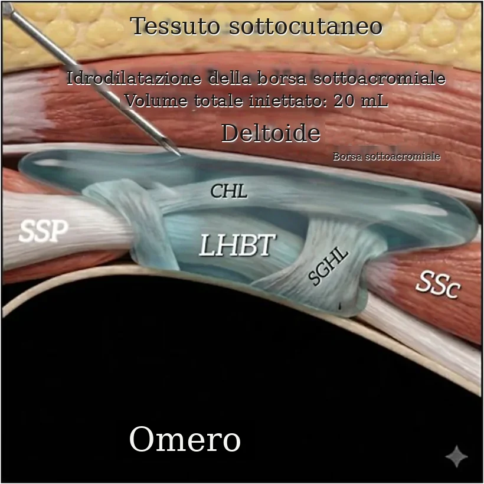

L'idrodilatazione consiste nell'iniettare nell'articolazione della spalla un volume di liquido — soluzione fisiologica con un cortisonico e un anestetico — sufficiente a distendere la capsula che si è retratta.
Si esegue sotto guida ecografica, in ambulatorio, in una sola seduta. Riguarda la capsulite adesiva, cioè la spalla congelata.

Che cosa si propone di fare
Nella capsulite il problema non è il tendine ma l'involucro dell'articolazione, che si infiamma e si restringe. Il risultato è una spalla che non si muove nemmeno quando è un altro a muoverla.
L'idrodilatazione agisce su due fronti contemporaneamente: il cortisonico riduce l'infiammazione, il volume di liquido mette in tensione la capsula. È la ragione per cui si inietta un volume maggiore rispetto a un'infiltrazione normale.
Si propone quando il dolore e la rigidità non sono migliorati con fisioterapia e farmaci, e prima di considerare le opzioni chirurgiche — la mobilizzazione in anestesia o il rilascio della capsula in artroscopia.
Com'è la seduta
Si sta seduti o sdraiati. Dopo l'anestesia della pelle, il medico porta l'ago dentro l'articolazione seguendolo con l'ecografo, e inietta il liquido in modo progressivo.
Durante l'iniezione si avverte una sensazione di pressione e di tensione crescente nella spalla, a volte un dolore che si irradia al braccio: è il segno che la capsula si sta distendendo, ed è la parte meno piacevole della procedura. Dura pochi minuti.
La via d'accesso non è un dettaglio tecnico indifferente. L'iniezione eseguita davanti, nell'intervallo dei rotatori, è quella che dà i risultati migliori su dolore e rotazione esterna.[2][3]
Dopo la procedura, fai
- Comincia gli esercizi di mobilità il prima possibile: è la parte che decide il risultato.
- Sfrutta le settimane in cui il dolore è ridotto per guadagnare movimento.
- Se sei diabetico, controlla la glicemia per qualche giorno.
- Metti in conto un indolenzimento per uno o due giorni.
Non fare
- Non tenere il braccio fermo in attesa che passi: la spalla si irrigidisce di nuovo.
- Non forzare il movimento fino al dolore acuto: serve costanza, non forza.
- Non considerarla risolutiva da sola, senza riabilitazione.
Quanto funziona
Rispetto alla sola infiltrazione di cortisone, l'idrodilatazione dà un miglioramento più marcato della disabilità e della rotazione esterna, ma si tratta di un vantaggio in buona parte transitorio, e la sua rilevanza pratica resta discussa.[1] Esistono studi in cui aggiungere la distensione al cortisone non ha prodotto alcun beneficio ulteriore.[4]
Il confronto più favorevole è con la mobilizzazione in anestesia: a parità di obiettivo, l'idrodilatazione costa meno, non richiede sala operatoria e non espone all'anestesia generale.[1]
Un elemento sembra contare più della tecnica in sé: la riabilitazione intensiva nelle settimane successive, che nelle casistiche si associa ai risultati migliori.[1]
Quando non si fa
- Infezione in corso, nella spalla o in generale.
- Allergia nota all'anestetico o al cortisonico impiegato.
- Disturbi della coagulazione non controllati.
- Diabete scompensato: l'iniezione va rimandata e la glicemia sorvegliata.
La rigidità della spalla non è sempre una capsulite. Prima di procedere va esclusa un'altra causa del blocco — un'artrosi avanzata, una lesione massiva della cuffia, un esito di frattura — perché in quei casi la distensione non serve.
Effetti indesiderati
La procedura è in genere ben tollerata e le complicanze gravi non sono la regola.[3] I disturbi riportati sono minori e passeggeri: dolore locale nelle ore successive, che risponde agli antinfiammatori, e arrossamento del viso.
Il dolore durante l'iniezione merita una parola a parte, perché è prevedibile e spesso non viene annunciato: la messa in tensione della capsula si sente, e sapere in anticipo che accadrà rende la procedura più sopportabile.
Come per ogni infiltrazione con cortisone, è possibile un rialzo transitorio della glicemia,[5] e l'infezione articolare è rara ma va sospettata se il dolore cresce dopo il secondo giorno o compare febbre.
Cosa è utile sapere prima
La capsulite ha un decorso lungo. Tende a migliorare nel tempo anche senza interventi, ma non sempre in modo completo: l'idrodilatazione serve ad accorciare la fase peggiore e a rendere possibile la riabilitazione, non a ribaltare la storia naturale.
Il momento conta. Nella fase in cui prevale il dolore si punta a spegnere l'infiammazione; quando prevale la rigidità, il recupero del movimento è l'obiettivo principale, e il ruolo dell'iniezione cambia.
Non tutte le idrodilatazioni sono uguali. Via d'accesso, volume iniettato e farmaci associati variano fra i centri, e i risultati pubblicati riflettono questa variabilità.[2]
Da dove vengono queste informazioni
- Poku D, Hassan R, Migliorini F, et al. Efficacy of hydrodilatation in frozen shoulder: a systematic review and meta-analysis. British Medical Bulletin 2023;147(1):121–147. doi:10.1093/bmb/ldad018
- Lei Q, Li J, Xie X. Comparative efficacy of isolated hydrodilatation and hydrodilatation with adjuvant interventions for frozen shoulder: a network meta-analysis. American Journal of Physical Medicine & Rehabilitation 2026. doi:10.1097/PHM.0000000000003197
- Elnady B, Rageh EM, Hussein MS, et al. In shoulder adhesive capsulitis, ultrasound-guided anterior hydrodilatation in rotator interval is more effective than posterior approach: a randomized controlled study. Clinical Rheumatology 2020;39(12):3805–3814. doi:10.1007/s10067-020-05131-2
- Paruthikunnan SM, Shastry PN, Kadavigere R, Pandey V, Karegowda LH. Intra-articular steroid for adhesive capsulitis: does hydrodilatation give any additional benefit? A randomized control trial. Skeletal Radiology 2020;49(5):795–803. doi:10.1007/s00256-019-03316-8
- Benzon HT, Provenzano DA, Nagpal A, et al. Use and safety of corticosteroid injections in joints and musculoskeletal soft tissue: guidelines from the American Society of Regional Anesthesia and Pain Medicine. Regional Anesthesia & Pain Medicine 2026;51(7):746–773. doi:10.1136/rapm-2024-105656
Scheda aggiornata il 16 novembre 2026. Prossima revisione prevista entro novembre 2028.